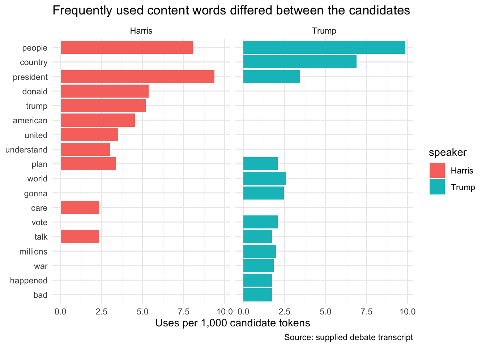

The new challenge: count language without losing context
Words begin inside complete speaking turns, not in a ready-made numeric table. To compare speakers, we must turn text into analysable rows and standardize the counts. We must then return to the transcript because frequency alone cannot explain what a speaker meant.
14.1 Learning objectives
By the end of this case, you should be able to:
import a prepared transcript table;
turn speaking turns into word rows;
remove common stop words with a join;
compare word use with a rate; and
return to the transcript before interpreting a word count.
14.2 Set up the case
The original transcript is a text file rather than a rectangular table. A preparation script separates it into speaker turns and saves a teaching CSV. This lets the lesson focus on tidy text analysis instead of loops and custom parsing functions.
The reproducible preparation is available in scripts/prepare_debate.R for readers who want to study it later.
If needed, install tidytext once in the Console with install.packages("tidytext"). tidytext is a companion to the tidyverse: it turns language into tidy rows that can be handled with familiar verbs such as filter(), count(), and joins. Then load the packages:
Continue in the same project
Open djr.Rproj and create 12-text-analysis.Rmd. Download debate_turns.csv and save it in data/. The preparation script is optional; the lesson starts from this ready-to-import CSV.
Rows: 230
Columns: 2
$ speaker <chr> "PARTICIPANTS", "MODERATORS", "MUIR", "DAVIS", "MUIR", "DAVIS"…
$ text <chr> "Vice President Kamala Harris (D) and Former President Donald …
One row represents one speaking turn.
14.3 The strategy
We will solve the text challenge in six steps:
choose the speakers being compared;
turn speaking turns into word rows;
make a documented decision about common words;
keep the total number of words as a denominator;
compare word-use rates; and
return counted words to their original context.
14.4 Strategy 1: choose the comparison
filter() keeps the candidate speakers, and recode() replaces their all-capital labels with names that are easier to display:
The row counts describe speaking turns, not speaking time or number of words.
14.5 Strategy 2: turn text into word rows
unnest_tokens() from tidytext turns each speaking turn into separate word rows. It needs a name for the new word column and the name of the original text column:
One row now represents one word token associated with a candidate.
14.6 Strategy 3: decide how to handle common words
The tidytext package provides a table called stop_words, containing common English words such as “the” and “of.” anti_join() keeps tokens that do not match that reference table:
content_words <- tokens |>anti_join(stop_words, by ="word")
Stop-word removal is an analytical choice. Words such as “not” may be important in political speech, so inspect the list and describe the rule in the methods.
14.7 Strategy 4: count words and keep a denominator
A rate is more comparable than a raw count when the candidates spoke different numbers of words.
14.8 Strategy 5: compare word-use rates
slice_max() keeps rows with the largest value. Group first so it selects the largest rates separately for each candidate:
top_words <- word_rates |>group_by(speaker) |>slice_max(uses_per_1000_tokens, n =10)top_words
Create a simple comparison chart:
top_words |>ggplot(aes(x = uses_per_1000_tokens,y =fct_reorder(word, uses_per_1000_tokens),fill = speaker ) ) +geom_col() +facet_wrap(~ speaker) +labs(title ="Frequently used content words differed between the candidates",x ="Uses per 1,000 candidate tokens",y =NULL,caption ="Source: supplied debate transcript" ) +theme_minimal()

Frequency does not measure importance, sincerity, truthfulness, or audience effect.
14.9 Optional extension: look at two-word phrases
Single words lose context. unnest_tokens() can also create adjacent two-word phrases, called bigrams. Here token = "ngrams" selects word groups and n = 2 sets their length: